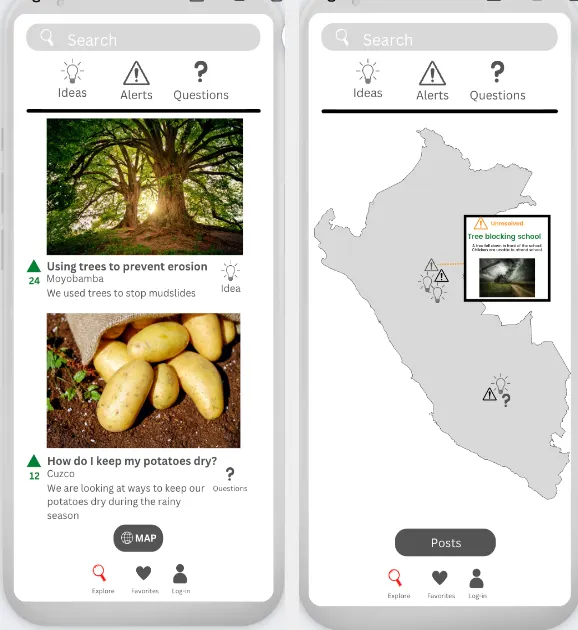
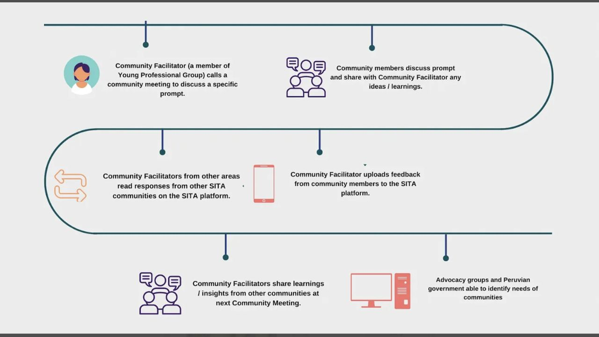

Product and program design
Community advocacy in Peru
I worked with a team in Peru on a mobile app for Indigenous communities to share ideas, ask questions, and coordinate advocacy.
My work included research, design workshops, Figma prototypes, and planning how the app would be used in community meetings.
How the proposed model worked
- My role
- Research, workshop facilitation, impact measurement, and prototyping
- Location
- Cuzco and Moyabamba, Peru
- Deliverables
- Working app prototype and a community meeting model for a planned pilot
Connecting communities
Distance and technical barriers made it difficult for Indigenous communities in Cuzco and Moyabamba to exchange ideas, ask questions, and organize together.
I joined six months into the project. The team had conducted initial interviews but hadn’t yet designed a prototype. My role was to help develop that prototype and work out how it could be introduced and tested in two communities.
Community meetings and a shared app
We designed a model in which a local facilitator would run community meetings and use the app to exchange questions and ideas with other communities.
- 01
Community meeting
A facilitator would lead a discussion using a prompt from the app.
- 02
Questions and responses
The facilitator would post the group’s questions and ideas, and read posts from other communities.
- 03
Follow-up meeting
Responses from other communities would be discussed at the next meeting.
A simplified version of the model we designed for the planned pilot.
View the original diagram

Research, workshops, and prototyping
Research
I began with two weeks of research: reviewing the team’s discovery surveys, interviewing experts, and reading about Indigenous communities in Peru and other uses of technology in advocacy. I had little experience of this context, so I needed to understand the research the team had already done.
Design workshops
I led workshops on the app, community organizing, and how to introduce the project. We worked through practical questions, including how often meetings should happen, how many people should attend, and what the facilitator would do.
Prototyping and evaluation
I created user journeys and interface designs in Figma, followed by a working prototype. I also led exercises to develop a theory of change and identify impact indicators. With the team, I developed criteria for assessing the prototypes.
Prototype assessment
- SuitabilityDid the design fit the communities’ context?
- Community needsDid it address what people had asked for?
- FeasibilityCould the team build and run it?
Outcome
Prototype and pilot plan
We developed a working app prototype and a plan for using it alongside facilitated community meetings. The team planned to test the model in two communities in early 2023.
I don’t know whether that pilot went ahead, so I can speak to the design and prototype work but not its impact after launch.